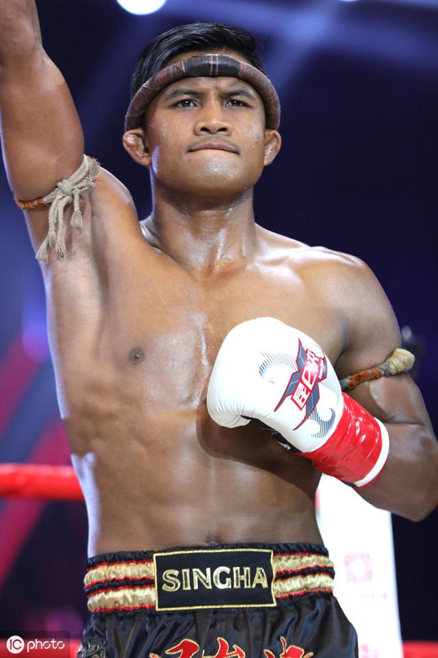
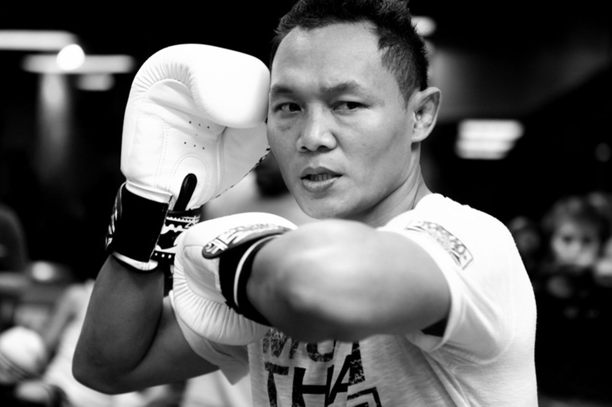
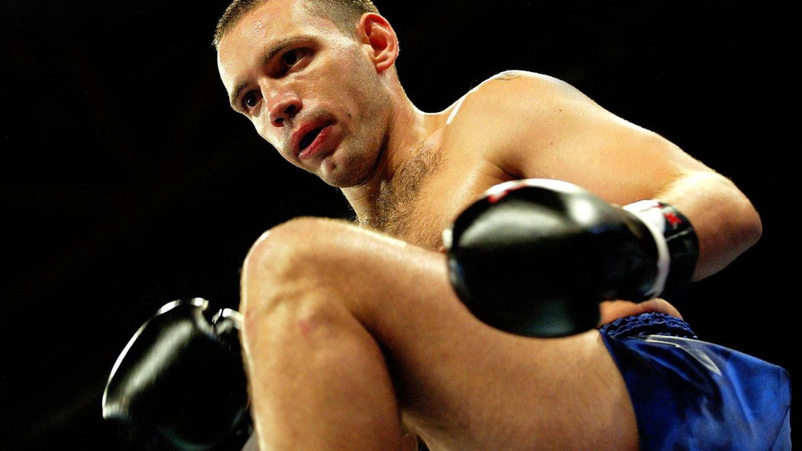

Qu'est-ce que le Muay-Thaï ?
Le Muay-Thaï, également connu sous le nom de "l'art des huit membres", est un sport de combat traditionnel originaire de Thaïlande.
Il combine des techniques de frappes utilisant les poings, les coudes, les genoux et les jambes, ainsi que des projections et du corps-à-corps.
Le Muay-Thaï est pratiqué dans le monde entier et est célèbre pour son intensité et sa discipline.
Combattants légendaires
Buakaw Banchamek

Buakaw Banchamek est l'un des combattants les plus emblématiques du Muay-Thaï moderne.
Double champion du tournoi K-1, il est connu pour sa puissance, sa technique et son endurance exceptionnelle.
Buakaw a contribué à populariser le Muay-Thaï à l'international grâce à son style explosif.
Saenchai

Saenchai est considéré comme l'un des combattants les plus techniques de l'histoire du Muay-Thaï.
Connu pour ses esquives spectaculaires et sa créativité dans le ring, il a remporté des titres dans plusieurs catégories de poids.
Sa longévité et son charisme lui valent une place particulière dans le cœur des fans.
Jean-Charles Skarbowsky

Jean-Charles Skarbowsky est une figure légendaire du Muay-Thaï en France et dans le monde.
Combattant redoutable et multiple champion, il a marqué les esprits par sa maîtrise technique et son style agressif.
Il a affronté certains des meilleurs combattants au Lumpinee Stadium, le temple du Muay-Thaï en Thaïlande, et reste une inspiration pour les générations futures.